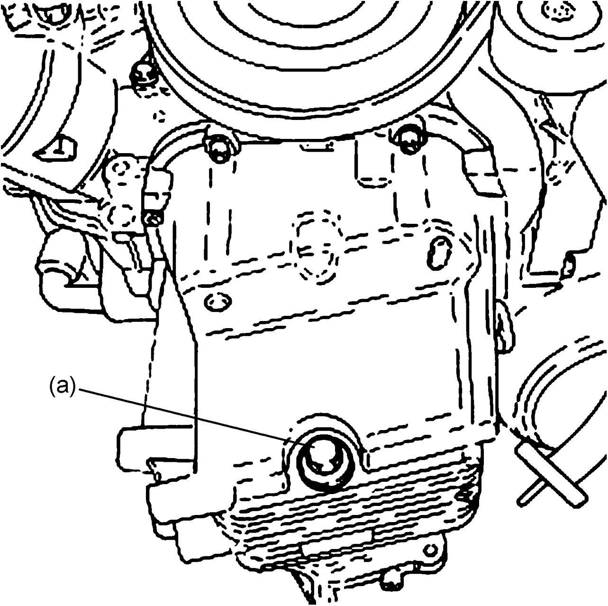
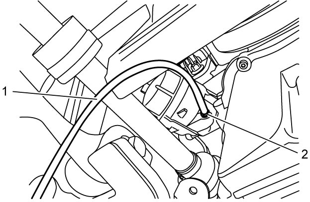
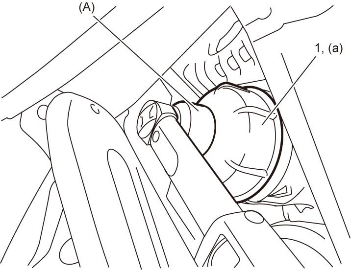
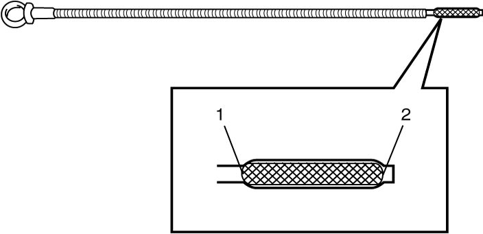

1E
| Engine Oil and Filter Change |
There is an increased risk of severe personal injury or health problems if the procedure described below is performed without taking proper precautions.
•Engine oil has an adverse health effect. Read and understand the instructions in General Precautions and follow all the instructions.
•Check that the engine is not running when performing Step 1) – 14) of the procedure.
•Adequately ventilate the working area when starting the engine in Step 15).
•Check that the engine is not running when performing Step 1) – 14) of the procedure.
•Adequately ventilate the working area when starting the engine in Step 15).
NOTE:
•After draining engine oil at drain plug hole, oil remains in heat exchanger No.1 about 500 cc.
•Before removing oil filter, protect drive shaft boot from dripping oil.
•Wipe oil off immediately from drive shaft boot if the boot gets wet with the engine oil.
•Before removing oil filter, protect drive shaft boot from dripping oil.
•Wipe oil off immediately from drive shaft boot if the boot gets wet with the engine oil.
Before draining engine oil, check engine for oil leakage. If any evidence of leakage is found, correct defective part before proceeding to the following procedure.
1)Remove oil filler cap and dipstick from engine.
2)Hoist vehicle and remove engine undercover.
3)Drain engine oil by removing drain plug.
4)Wipe drain plug clean. Reinstall drain plug with new gasket.


 "Expand image")
5)Drain engine oil in filter as follows.
a)Connect a suitable hose (1) to bleeder plug (2) and put hose end into a suitable container.
b)Loosen bleeder plug slowly up to the position where oil comes out from hose.

 "Expand image")
6)Using special fool, remove oil filter cover (1) and oil filter from heat exchanger No.1.
7)Install new oil filter to heat exchanger No.1.
8)Install new O-ring to oil filter cover.
9)Tighten oil filter cover to specified torque using special tool.

 "Expand image")
10)Tighten bleeder plug and then remove suitable hose from bleeder plug.
11)Install engine undercover.
12)Replenish oil until oil level is brought to upper limit mark on dipstick.
The filler inlet is at the top of the camshaft housing.
Use specified synthetic engine oil.
Engine oil grade: ACEA C2
Engine oil viscosity: SAE 0W-30
Engine oil specification
Oil pan and oil filter capacity: About 5.52 liters (11.67 / 9.71 US/Imp pt.)
Use specified synthetic engine oil.
Engine oil grade: ACEA C2
Engine oil viscosity: SAE 0W-30
NOTE:
Note that the amount of oil required when actually changing oil may somewhat differ from the data depending on conditions (temperature, viscosity, etc.).
13)Check oil filter and drain plug for oil leakage.
14)Install oil filler cap and dipstick to engine.
15)Start engine and run it for 2 minutes. Stop it and wait for 5 minutes before checking oil level. Add oil, if necessary, to bring oil level to upper limit mark (1) on dipstick.

 "Expand image")
| 2. | Low level mark |
16)Reset lighting up of oil change request light and engine oil parameter as follows.
NOTE:
For details of SUZUKI scan tool, refer to its Operator’s Manual.
a)Connect SUZUKI scan tool to DLC with ignition “OFF”.
b)Set ignition “ON”.
c)Select “Oil change request light reset” under “Utility” mode of SUZUKI scan tool.
d)Set ignition “OFF”, and wait for 30 seconds or more.
e)Check that “Distance to next oil change (km/mile)” and “Oil degradation (%)” are reset using SUZUKI scan tool.
NOTE:
The default value of “Distance to next oil change” is 30,000 km (18,641 mile) and the default value of “oil degradation” is 100%.